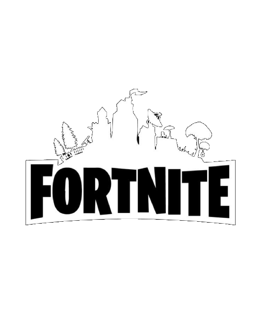

CyberPunk
2077

Cyberpunk 2077 (с англ.«Киберпанк 2077») — компьютерная игра в жанре action-adventure в открытом мире, разработанная и изданная польской студией CD Projekt[14]. Действие игры происходит в 2077 году в Найт-Сити, вымышленном североамериканском городе из вселенной Cyberpunk.Перейти к разделу «#Сюжет» Игрок управляет настраиваемым протагонистом по имени Ви, который работает наёмником и владеет навыками взлома и боя.Перейти к разделу «#Игровой процесс»
Fortnite

Fortnite is an online video game developed by Epic Games and released in 2017. It is available in three distinct game mode versions that otherwise share the same general gameplay and game engine: Fortnite Battle Royale, a free-to-play battle royale game in which up to 100 players fight to be the last person standing; Fortnite: Save the World, a cooperative hybrid tower defense-shooter and survival game in which up to four players fight off zombie-like creatures and defend objects with traps and fortifications they can build; and Fortnite Creative, in which players are given complete freedom to create worlds and battle arenas.
brawl stars

Brawl Stars is a multiplayer online battle arena and third-person hero shooter video game developed and published by the Finnish video game company Supercell. It was released worldwide on December 12, 2018, on iOS and Android. The game features various game modes, each with a different objective. Players can choose from a selection of Brawlers, which are characters that can be controlled with on-screen joysticks in a game match.+